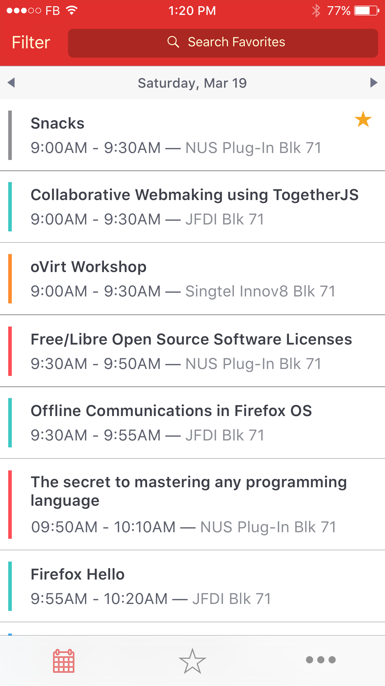
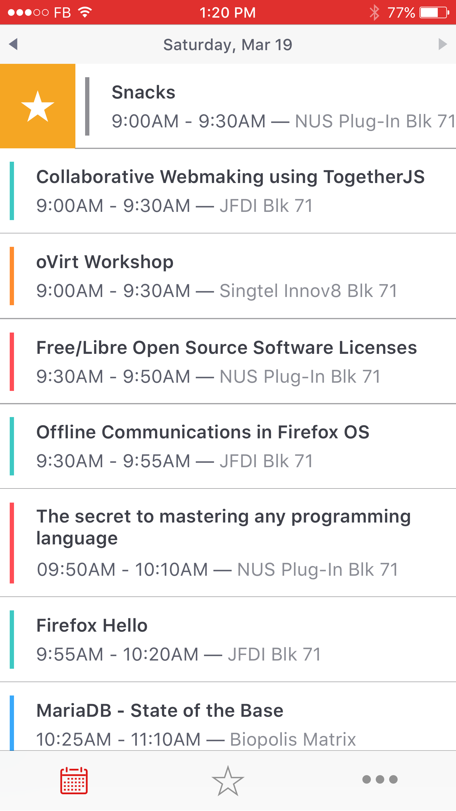
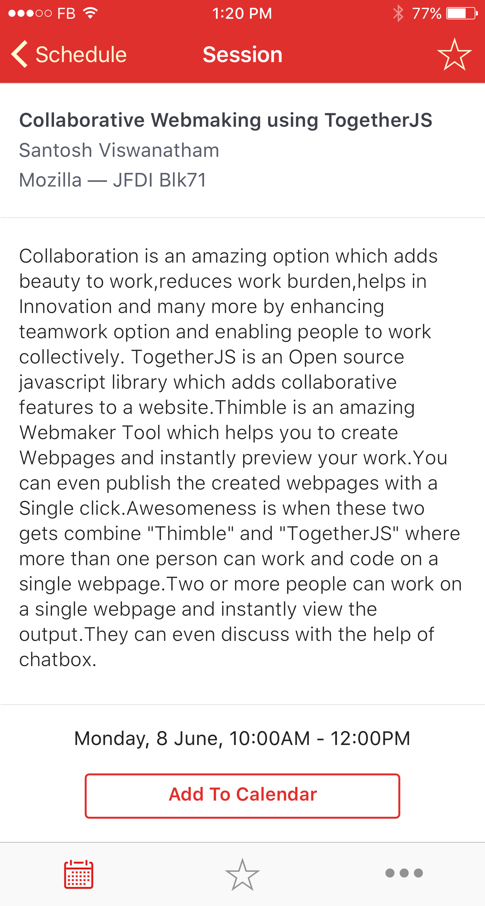

FOSSAsia 2016 iOS App
iOS and Design
An app for Asia's premier open technology conference
FOSSAsia is a 3-day community gathering of Free and Open Source contributors in Asia. The event showcases talents from open hardware, to design, graphics and software.
When I first started working on this project for the FOSSAsia Conference, I only had a month to throw something together but I knew I wanted an app that adds to a conference-going experience to make it as straightforward as possible for people so they can focus on being present at the venue.
I worked on designing and developing the app from scratch, with some help from another contributor during the initial spike phase. We eventually shipped a universal app with features such as track filtering, favourites, adding to calendar, etc.
The project is now open source as part of FOSSAsia's "Open Event" effort and I no longer actively participate in it.